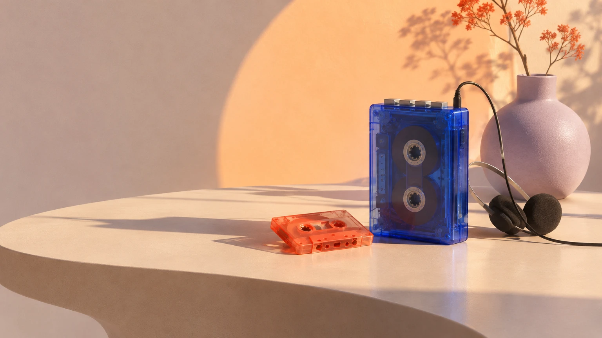

Choose a pace
you can start.
A short sprint, a familiar Pomodoro, or a longer stretch. Begin with something that feels possible.
15 · 25 · 50 MINUTES✳ A MAC FOCUS RITUAL MADE FOR THE IN-BETWEEN
A timer, a task, a sound that softens the edges. Retro helps you begin without turning focus into another project.

Not a system to manage.
A moment to keep.
Start with the time you have. Leave a note for your future self. Then let a small, quiet app hold the edges while you do the thing.
A short sprint, a familiar Pomodoro, or a longer stretch. Begin with something that feels possible.
15 · 25 · 50 MINUTESChoose a bundled soundscape and jot down the one task you want to return to.
ONE NOTE · FOUR SOUNDSEnd on a gentler note with a break and a brief recap of where to pick things back up.
A SMALL WIN COUNTSPick a starting point. You can always change the pace.
Finish the next section✎
A sped-up visual demo. Not the app's live timer.
Four bundled soundscapes. No playlist rabbit hole. Tap a track and let it make the room feel a little more yours.
Some days need a little rain.
Some days need a little piano.
Look around the idea: a steady timer, a place for your note, and sound controls close at hand.
Retro for Mac is in private beta. This page is a look at the idea, not a public release or download.